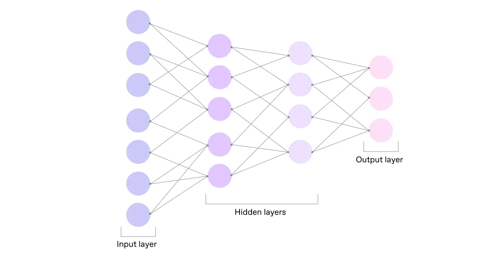

Принцип роботи штучного інтелекту
Штучний інтелект (ШІ) — це система, яка може аналізувати дані, вчитися на прикладах та приймати рішення. Ви взаємодієте з ним щодня — від рекомендацій у соцмережах до голосових помічників.
Етапи роботи ШІ
1. Збір даних
Отримання інформації для подальшої обробки.
2. Попередня обробка
Підготовка даних для навчання моделі.

3. Навчання
Створення алгоритму, що розпізнає патерни.
4. Використання
Робота ШІ у реальних задачах.
Спрощена схема роботи
Приклади застосування
- Рекомендації відео та музики
- Переклад тексту в реальному часі
- Медична діагностика за знімками
- Розпізнавання облич та об'єктів